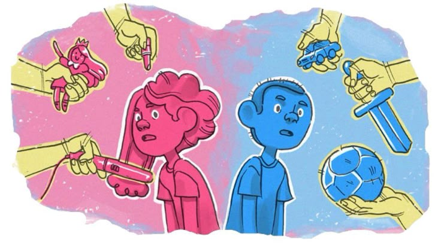
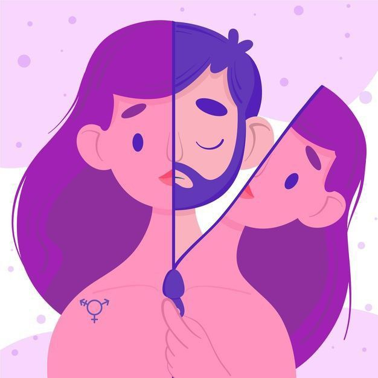
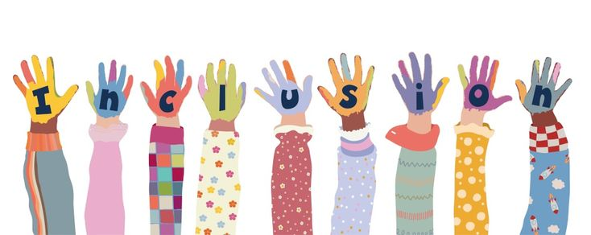

La sexualidad es un aspecto fundamental de la vida humana que abarca aspectos físicos, emocionales y sociales. Es importante abordar la sexualidad de manera saludable y responsable, y para ello, es fundamental contar con recursos educativos e interactivos que permitan a las personas aprender y comprender mejor sobre este tema. Nuestra plataforma ofrece una variedad de recursos y herramientas para ayudar a las personas a tomar decisiones informadas sobre su sexualidad y relaciones.
Recursos Educativos
Artículos y guías sobre sexualidad saludable, incluyendo temas como la anatomía y fisiología sexual, la respuesta sexual humana y la salud sexual y reproductiva. Videos y documentales sobre sexualidad y relaciones, incluyendo temas como la comunicación efectiva en las relaciones y la intimidad y conexión emocional. Infografías y gráficos sobre anatomía y fisiología sexual, incluyendo diagramas y explicaciones detalladas sobre la anatomía sexual masculina y femenina.
Recursos Interactivos
Juegos y simulaciones sobre sexualidad y relaciones, diseñados para ayudar a las personas a aprender y comprender mejor sobre estos temas de manera divertida y interactiva. Cuestionarios y tests sobre conocimientos de sexualidad, para ayudar a las personas a evaluar su comprensión y identificar áreas en las que necesitan más información. Foros y chats para discutir temas relacionados con la sexualidad, donde las personas pueden compartir sus experiencias y conocimientos con otros usuarios.
Recursos Virtuales
Clases en línea y talleres sobre sexualidad y relaciones, ofrecidos por expertos en el campo y diseñados para proporcionar información y habilidades prácticas. Videos y podcasts sobre temas relacionados con la sexualidad, incluyendo entrevistas con expertos y testimonios de personas que han experimentado diferentes aspectos de la sexualidad. Enlaces a recursos y organizaciones confiables sobre sexualidad, para proporcionar acceso a información y apoyo adicional.
Sexualidad y Relaciones
Información sobre relaciones saludables y no saludables, incluyendo señales de alerta y consejos para mantener relaciones saludables. Recursos sobre comunicación efectiva en las relaciones, incluyendo consejos y estrategias para comunicarse de manera efectiva con parejas y amigos. Artículos sobre la importancia de la intimidad y la conexión emocional en las relaciones, incluyendo consejos para cultivar la intimidad y la conexión emocional.
Anatomía y Fisiología Sexual
Infografías y gráficos sobre la anatomía sexual masculina y femenina, incluyendo diagramas y explicaciones detalladas sobre la anatomía y fisiología sexual. Información sobre la respuesta sexual humana, incluyendo la excitación, el orgasmo y la resolución. Recursos sobre la salud sexual y reproductiva, incluyendo información sobre la prevención de enfermedades de transmisión sexual y la planificación familiar.
Diversidad e Inclusión
Recursos sobre la diversidad sexual y de género, incluyendo información sobre la identidad de género y la orientación sexual. Información sobre la importancia de la inclusión y el respeto en las relaciones, incluyendo consejos para ser un aliado y apoyar a personas de diferentes identidades y orientaciones. Artículos sobre la importancia de la empatía y la comprensión en las relaciones, incluyendo consejos para cultivar la empatía y la comprensión.
Beneficios
Aprender sobre sexualidad de manera segura y confiable, sin temor a ser juzgado o criticado. Desarrollar habilidades y conocimientos para tomar decisiones informadas sobre la sexualidad y relaciones. Acceder a recursos y apoyo para abordar temas relacionados con la sexualidad, incluyendo la salud sexual y reproductiva y las relaciones saludables.
¿Cómo utilizar esta Página?
Explora las diferentes secciones y recursos disponibles, y selecciona los que sean más relevantes para tus necesidades y intereses. Utiliza los recursos educativos y interactivos para aprender sobre sexualidad y relaciones, y para desarrollar habilidades y conocimientos prácticos. Comparte tus experiencias y conocimientos con otros usuarios en los foros y chats, y aprende de sus experiencias y perspectivas.
Material de juegos didacticos
ir al video de referenciaJuegos para adolecentes
"La ruleta de la sexualidad":
Se crea una ruleta con diferentes temas relacionados con la sexualidad (por ejemplo, anatomía, relaciones, emociones, etc.). Los jugadores giran la ruleta y responden preguntas o toman decisiones relacionadas con el tema que les toca. El objetivo es fomentar la discusión y la reflexión sobre la sexualidad de manera divertida y segura.
"El juego de las emociones"
Se crean cartas o tarjetas con diferentes emociones relacionadas con la sexualidad (por ejemplo, amor, deseo, miedo, etc.). Los jugadores sacan una carta y deben expresar cómo se sentirían en una situación relacionada con la emoción que les toca. El objetivo es ayudar a los jugadores a identificar y expresar sus emociones de manera saludable.
"La trivia de la sexualidad"
Se crean preguntas y respuestas sobre temas relacionados con la sexualidad. Los jugadores responden preguntas y ganan puntos por respuestas correctas. El objetivo es evaluar y mejorar los conocimientos sobre la sexualidad de manera divertida.
Actividad
"La línea de la vida"
Los participantes dibujan una línea de tiempo que represente su vida y marcan eventos importantes relacionados con la sexualidad. Luego, se discuten los eventos y cómo han influido en su vida y decisiones. El objetivo es fomentar la reflexión y la autoevaluación sobre la propia experiencia y decisiones relacionadas con la sexualidad.
"El círculo de la confianza"
Los participantes se dividen en parejas y se turnan para compartir sus pensamientos y sentimientos sobre un tema relacionado con la sexualidad. El objetivo es fomentar la confianza y la comunicación en las relaciones.
"La discusión grupal"
Se plantea un tema relacionado con la sexualidad y se fomenta la discusión y el debate entre los participantes. El objetivo es fomentar la reflexión y la comprensión sobre diferentes perspectivas y opiniones relacionadas con la sexualidad.